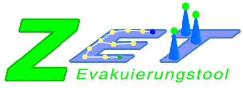

ZET Evacuation Tool
The ZET softwaretools, which is licensed under the GPL. allows to model evacuation scenarios and simulate and optimze them. Within ZET multi-storey buildings can be designed and residents can be placed and emergency exits can be assigned to them.
An earliest arrival flow is then computed to route the residents to the best exits. Since the flow computation has to make certain idealistic assumptions, the included simulation can then be used to test the computed evacuation paths. A wide selection of statistics and an advanced visualizer help to analyze the data.
Editor
ZET has an integrated editor that can be used to design the evacuation scenarios. With this editor it is possible to create various floors, rooms on the floors and specialized areas within the rooms that have additional semantics. All rooms and areas can be arbitrary closed polygons.
The evacuees can be automatically set in so called "assignment areas". The residents can be divided into groups that have different properties. The properties and groups can be edited in the assignment editor, the adjustment of the properties is done by several property distributions.

Visualisierung
Both, the simulaton on a cellular automaton and the calculated network flow can be visualized in 3d using OpenGL. The position of the camera inside the visualization is completely controllable using the normal mouse and keyboard controls. Within the visualization various information can be accessed, such as for example the utilization of areas. The visualization can be viewed in perspective view, isometric view and orthogonal projection.

Get it!
ZET 1.0.3a Suite für Java 6. (md5: 73e7515d14a42ee9257ea6f8444d7be7)
Other versions, signatures and the source code are available in the Downloads section.